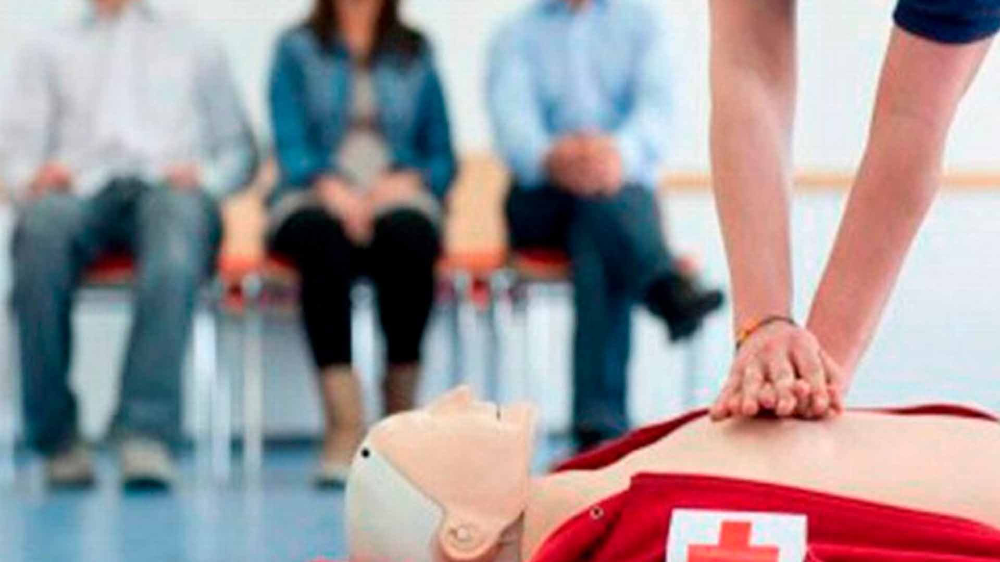

Guía de referencia rápida
Procedimientos claros y verificados para responder ante heridas, quemaduras, atragantamientos y otras emergencias comunes, mientras llega ayuda profesional.
Fundamentos
Son las medidas inmediatas que se aplican a una persona lesionada o enferma antes de que llegue atención médica profesional. Su objetivo es preservar la vida, evitar que la condición empeore y favorecer la recuperación. Todo se organiza en tres pasos: Proteger, Avisar y Socorrer (método PAS).

Verifica que el lugar sea seguro para ti y para la persona afectada antes de acercarte.
Llama o pide a alguien que llame de inmediato a los números de emergencia.
Aplica el procedimiento adecuado según el tipo de emergencia, dentro de tus conocimientos.
Procedimientos
Toca cada tarjeta para ver los pasos a seguir. Recuerda que esto no sustituye una capacitación formal ni atención médica.
Preparación
Elementos esenciales que todo hogar, vehículo o institución debería tener a la mano.
Ponte a prueba
Responde estas preguntas para repasar lo aprendido. No sustituye una certificación oficial.
Escríbenos
Este formulario es solo de demostración: no está conectado a ningún servidor ni envía datos reales.